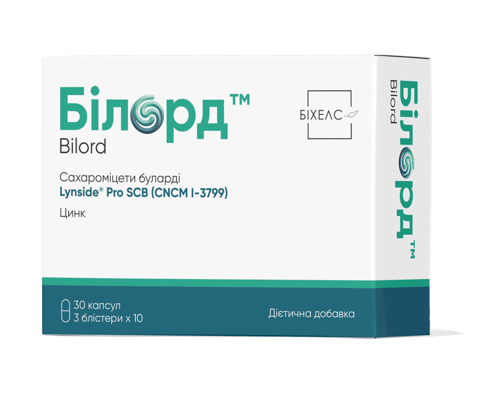

Білорд

Білорд (капсули №30)
Дієтична добавка — додаткове джерело пробіотичних дріжджів та цинку
Спеціально підібрана комбінація запатентованого штаму сахароміцетів Буларді та цинку для відновлення кишкової мікрофлори, підтримки імунітету та захисту від антибіотик-асоційованих розладів ШКТ.
Склад та активні речовини
1 капсула містить:
- Сахароміцети буларді (Lynside® Pro SCB) (Saccharomyces cerevisiae boulardii CNCM I-3799) — 250 мг;
- Цинк (у формі глюконату цинку) — 10 мг (100% референсної добової норми);
- Допоміжні речовини: мальтодекстрин, желатинова оболонка, барвник оксид цинку.
Властивості компонентів
- Lynside® Pro SCB (Saccharomyces boulardii): генетично стійкий до антибіотиків пробіотичний шмам. Пригнічує ріст патогенних бактерій та грибів, нейтралізує бактеріальні ендотоксини, сприяє відновленню бар'єрної функції кишечника.
- Цинк (глюконат цинку): необхідний мікроелемент для нормальної роботи імунної системи, відновлення слизової оболонки та регуляції водно-електролітного обміну при розладах травлення.
Рекомендації до застосування
- Додаткове джерело пробіотичних дріжджів та цинку;
- Профілактика та коригування дисбіозу кишечника;
- Захист та відновлення мікрофлори під час та після антибіотикотерапії;
- Підтримка імунітету та бар'єрної функції ШКТ при розладах травлення.
Спосіб застосування та дози
Вживати дорослим по 1–2 капсули на добу. Не слід змішувати з дуже гарячими (понад 50 °С) або холодними напоями, їжею чи алкоголем. Рекомендований термін споживання — 10–14 діб.
Протипоказання
Вагітність та період лактації, дитячий вік, підвищена індивідуальна чутливість до будь-якого з компонентів.